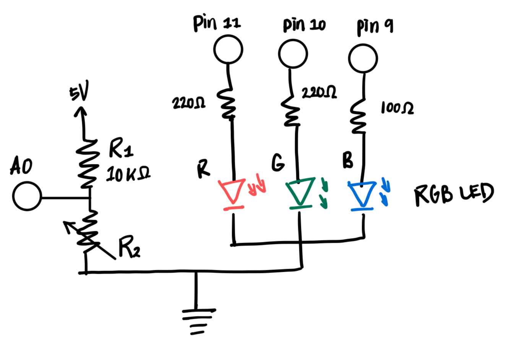
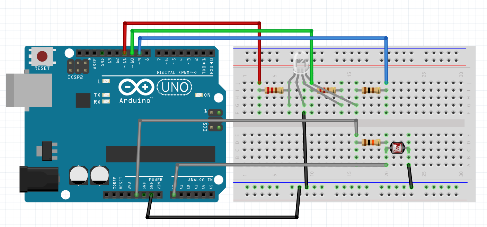

Schematic

This circuit uses a voltage divider with a fixed resistor R1 and a photoresistor R2 to sense
and control the brightness of an RGB LED through the Arduino.
The V-measure is connected to the Arduino's analog input at A0.
As light intensity changes, this voltage also changes between 0 V and 5 V
since the circuit is powered by a 5 V input.
The RGB LED, with red, green, and blue pins, is connected to three PWM pins (11, 10, 9)
on the Arduino, allowing each color's brightness to be independently controlled.
The circuit shares a common ground between the LED and the voltage divider.
Resistor Calculation and Choices
-
LEDs - With a 5 V supply and a desired current of 20 mA,
and given that red and green LEDs both have a voltage drop of 1.8 V,
and blue LED with a higher voltage drop of 3.3 V:
- Red LED: R = (5 V - 1.8 V) / 20 mA = 160 Ω
- Green LED: R = (5 V - 1.8 V) / 20 mA = 160 Ω
- Blue LED: R = (5 V - 3.3 V) / 20 mA = 85 Ω
So I chose a 220 Ω resistor for the red and green LEDs,
and a 100 Ω resistor for the blue LED, as these were the closest available values.
-
Fixed Resistor for voltage divider -
When I measured my photoresistor with a multimeter,
its resistance was around 15k Ω under natural lighting.
To choose the fixed resistor R1 for my voltage divider,
I selected a 10k Ω resistor, which is in the same range
as the resistance of my photoresistor.
Circuit

The RGB LED is connected to Arduino PWM pins 11, 10, and 9 for color control,
while a voltage divider using a 10k Ω fixed resistor and a photoresistor
connects to analog pin A0 to measure light intensity.

The RGB LED cycles through red, green, and blue, each staying on for about two seconds.
As I hover my hand over the photoresistor, it blocks light, increasing its resistance
and raising V-measure closer to 5 V, which makes the LED appear brighter.
When I move my hand away, more light hits the sensor, the resistance drops, and the LED dims.
This pattern repeats for each color.
Firmware
Arduino Sketch for A3 Input Output
const int analogInPin = A0; // the analog input pin for the sensor
const int ledPins[3] = {11, 10, 9}; // the digital output pins for the three LEDs (red, green, blue)
int sensorValue; // stores the averaged sensor value
int mappedValue; // stores the sensor value mapped to LED brightness
int readings[10]; // array to hold a set of past 10 sensor readings for averaging
long total = 0; // running total of readings (used for averaging)
int prevSensorValue = 0; // stores the previous sensor value
unsigned long start; // store the start time
void setup() {
// initialize each LED pin as an output
for (int ledPin : ledPins) {
pinMode(ledPin, OUTPUT);
}
Serial.begin(9600); // start serial communication
}
void loop() {
// loop through each LED pin
for (int ledPin : ledPins) {
// turn off all LEDs before lighting up the current one
for (int ledPin : ledPins) {
analogWrite(ledPin, 0);
}
start = millis(); // record the current time as the start of this LED’s 2-second phase
// keep updating LED brightness for 2 seconds
while (millis() - start < 2000) {
averageReadings(); // calculate the average of recent sensor readings
// compute the average value by dividing the total by the number of readings
sensorValue = total / (sizeof(readings) / sizeof(readings[0]));
// constrain sensor values to the range 400–800 to filter out extreme values
sensorValue = constrain(sensorValue, 400, 800);
// map the sensor value (400–800) to LED brightness (0–255)
mappedValue = map(sensorValue, 400, 800, 0, 255);
// print out sensor and mapped values to the serial monitor
Serial.print("sensor = ");
Serial.print(sensorValue);
Serial.print("\t mapped = ");
Serial.println(mappedValue);
// set LED brightness based on mapped sensor value
analogWrite(ledPin, mappedValue);
delay(10); // wait 10 ms before taking the next reading
}
}
}
// helper method to compute the average of multiple sensor readings
void averageReadings() {
total = 0; // reset total before new averaging loop
// loop through each slot in the readings array
for (int reading : readings) {
int sensorValue = analogRead(analogInPin); // take a new analog reading from the sensor pin
// if the new reading spikes more than 2.5× the previous one, treat it as noise
if (prevSensorValue > 0 && sensorValue > 2.5 * prevSensorValue) {
sensorValue = prevSensorValue; // replace spike with previous stable value
}
reading = sensorValue; // assign the sensor value to the local variable for reading
total += sensorValue; // add the reading to the running total
prevSensorValue = sensorValue; // store this reading as the previous one for the next iteration
}
}